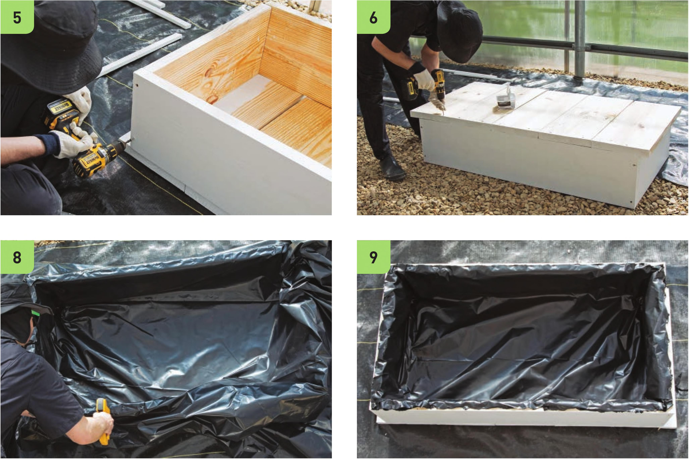

See 3 and 5 for proper placement. Make sure they are square and level. Use two 2V2" screws to fasten the boards together. 4 Place the other 2 x 12" x 4'4" board along the other long side of the base and fasten to the outside end of the 2T' board from step 3 using two 2Vi screws. 5 Place the remaining 2 x 12" x 2T‘ board on the last open side of the base between the two 4'4" boards. Fasten into place with two 2Vi" screws on each end. 6 Flip over the frame and place the five 2 x 12" x 2'4" baseboards back into position. Fasten the base to the frame with two 2Vi screws on each end of the 2'4" boards. 7 Flip the frame back over. 8 Adding the liner is one of the most difficult steps in assembling the reservoir. It is always best to have excess liner inside the reservoir instead of making the liner very taut. A very taut liner may be stressed by the weight of the water and could rip, creating leaks. For this reservoir, I used two layers of 6 mil. plastic to add some leak security. Fold the liner at the reservoir corners to get the liner flush with the frame. Once the plastic is in place, staple it to the rim of the reservoir frame. 9 Cut away excess liner with scissors or a razor blade knife. 54 DIY HYDROPONIC GARDENS
